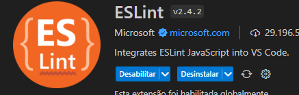

Ele vai te forçar a encontrar o erro no codigo, e vai corrigi-lo, para deixar mais eficiente a programação, ele tambem vai aplicar estilos.
ele vai te forçar a criar um codigo melhor, com o terminal aberto direto na pasta do projeto
Para começar o projeto,
Apos a instalação será preciso configura-lo
E para garantir o funcionamento do eslint será preciso instalar a extenção, no vscode.
